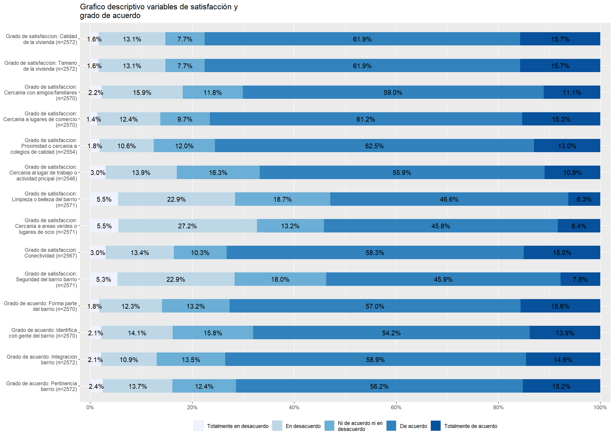
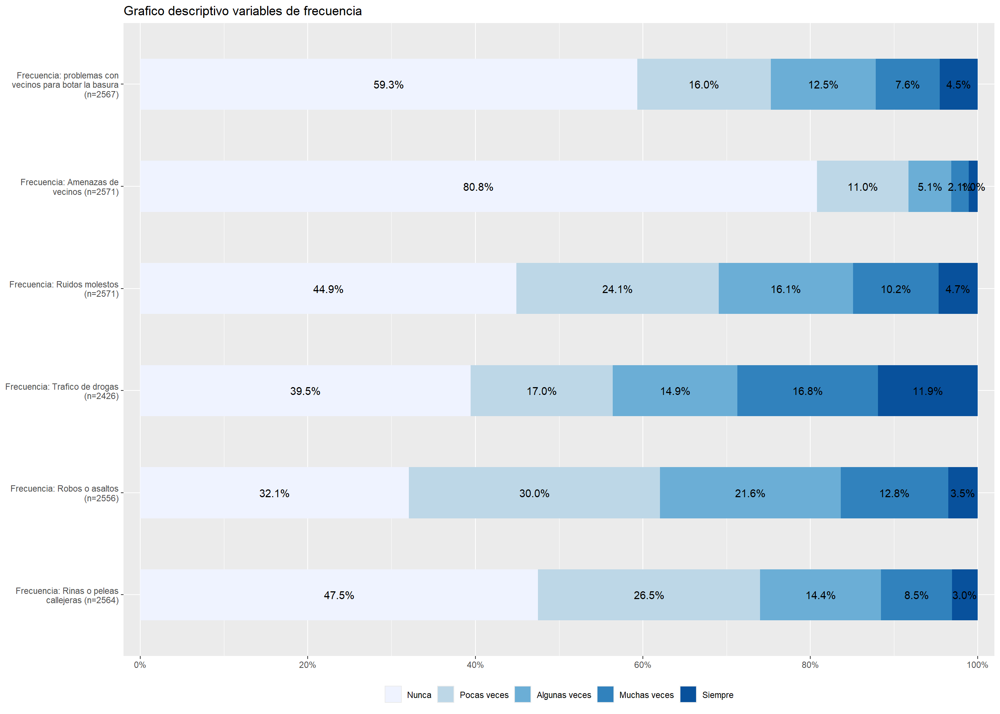
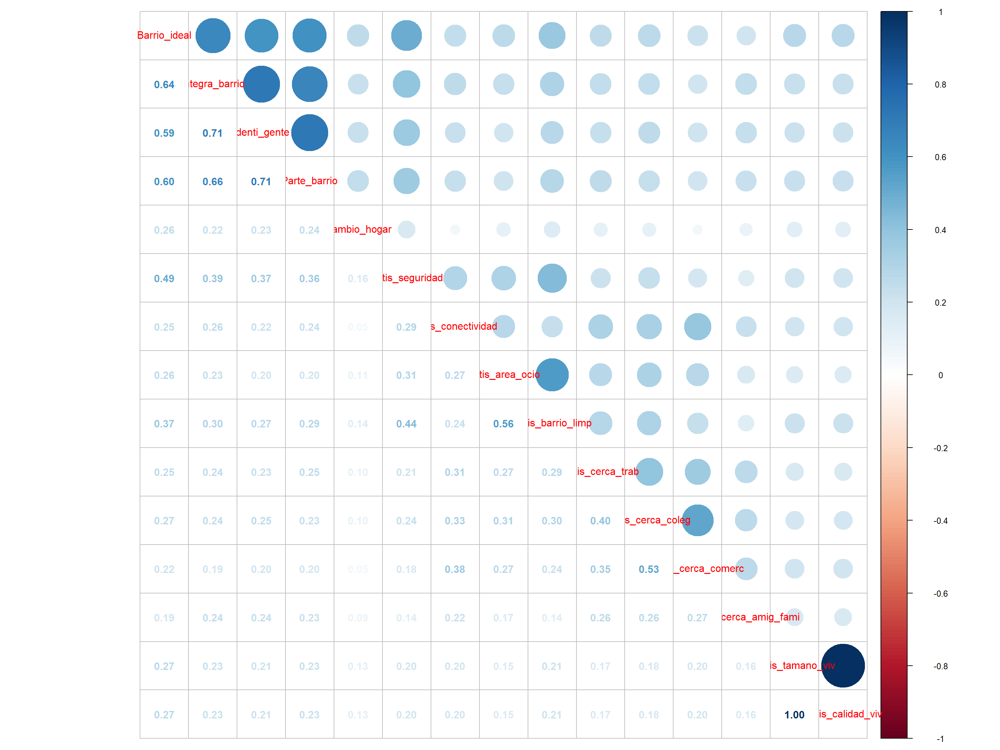

pacman::p_load(sjlabelled,
dplyr,
stargazer,
sjmisc,
summarytools,
kableExtra,
sjPlot,
corrplot,
sessioninfo,
ggplot2,
knitr) Trabajo 1: Reporte descriptivo en Quarto; Trabajo 2: Asociación de variables y contrucción de indices/escalas
Trabajo 1:
Determinantes residenciales que motivan la decision del cambio de hogar en Chile
1. Introducción
La satisfacción residencial se entiende como un componente clave y muy influyentes en como las personas experimentan y valoran su entorno inmediato, esta satisfacción no se construye de forma aislada si no que es en un tramado de elementos físicos-materiales y sociales, “Es un concepto multi dimensional, ya que incluye factores físicos, sociales y vecinales” (Martínez Ibarra & Ibarra Salazar, 2017).
Cuando hablamos de elementos físicos-materiales que poseen los entornos residenciales, nos referimos a aspectos como la presencia de áreas verde, la conectividad, la limpieza del espacio público, entre otros factores materiales, centrarse únicamente en estas dimensiones no nos permitiría comprender de forma completa la experiencia residencial es por eso que consideramos muy importante tener en cuenta aquellos aspectos sociales como la identificación al barrio, las relaciones con los individuos, la percepción de seguridad, entre otros. La sociología urbana ha señalado como la insatisfacción con el entorno residencial puede reflejar tensiones vinculadas a la exclusión social, la percepción de seguridad o la baja calidad de servicios urbanos (Sabatini,2009)
El estudiar las determinantes que conllevarían a un cambio de hogar nos demuestra cómo se expresan fenómenos que van más allá de un cambio de hogar, entenderemos como determinantes de satisfacción a partir de los siguientes 4 aspectos planteado por los autores mexicanos a partir de la encuesta de satisfacción residencial: la satisfacción depende de cuatro características: 1) físicas de la construcción, 2) espaciales, funcionales y formales, 3) ambientales, y 4) adaptaciones y transformaciones (Martínez Ibarra & Ibarra Salazar, 2017). La decisión de cambiar de vivienda no es solo un hecho individual, sino que también es una respuesta a ciertas condiciones estructurales que alteran los modos de vida y las rutinas de las personas. Además, es fundamental no dejar de lado el contexto chileno, en donde el acceso a la vivienda se encuentra altamente mercantilizado, estos elevados costos presentan una barrera significativa, sobre todo para el sector de los bajos recursos, que condiciona las posibilidades de elección y movilidad residencial
El concepto central que se va a investigar es la satisfacción residencial, en donde la entenderemos como una evaluación subjetiva que realiza el individuo sobre sus condiciones de su vivienda y el entorno inmediato en el cual se encuentra, tanto en lo social como en lo físico, se tendrá por objetivo estudiar cómo es que esta satisfacción generada por estas condiciones incide en la decisión de un cambio de hogar. Tal y como señala (Amérigo, et al, 2014) la satisfacción residencial no depende únicamente de la calidad objetiva de la vivienda, sino también de factores subjetivos, como la percepción del entorno y el grado de apego o identidad con el lugar
1.1 Hipotesis
La hipótesis central que plantearemos es que se espera que a medida que disminuya la satisfacción residencial tanto en sus aspectos físicos y sociales, aumente la probabilidad que una persona decida cambiarse de hogar. esta relación parte del supuesto que el grado que la persona se siente satisfecha tanto en lo físico-material como en lo social, actúan como indicadores claves en la influencia sobre la decisión que tengan las personas a querer cambiarse de hogar.
2. Preparación
2.1. Instalación de paquetes:
2.2 Descarga de la base de datos
Nuestra base de datos con la que nos dispondriamos a trabajar seria la “Encuesta Longitudinal Social de Chile” realizada por el COES (Centro de Estudios de Conflicto y Cohesión social).
Y esta base la descargamos desde internet con el siguiente link:
load(url("https://dataverse.harvard.edu/api/access/datafile/7245118"))2.3 Exploración de la base de datos
Esto lo realizamos con el fin de saber las dimensiones de la base de datos en cuanto a el numero de observaciones que esta tendria y el numero de variables de las que dispondria.
Para aquello aplicamos el siguiente codigo:
dim(elsoc_long_2016_2022.2) [1] 18035 750Podemos apreciar que la base de datos cuenta con un total de 18035 observaciones que fueron realizadas desde el año 2016 al año 2022 y un total de 750 variables.
2.4 Seleccion de variables
Para seleccionar nuestras variables utilizaremos el comando find_var, este comando nos permitiria localizar variables en la base de datos a partir de una palabra que sea de nuestro interes.
Dichas palabras que utilizaremos seria: barrio y satisfacción.
Palabra “Satisfaccion”
find_var(data = elsoc_long_2016_2022.2, "satisfaccion") col.nr var.name
1 159 t06_01
2 160 t06_02
3 161 t06_03
4 162 t06_04
5 163 t06_05
6 164 t06_06
7 165 t06_07
8 166 t06_08
9 167 t07_01
10 168 t07_02
11 395 d27_01
12 397 d27_03
var.label
1 Grado de satisfaccion: Seguridad del barrio
2 Grado de satisfaccion: Conectividad
3 Grado de satisfaccion: Areas verdes y de recreacion disponibles
4 Grado de satisfaccion: Limpieza y belleza del barrio
5 Grado de satisfaccion: Proximidad al lugar de actividad principal
6 Grado de satisfaccion: Proximidad a colegios de buena calidad
7 Grado de satisfaccion: Proximidad a areas de comercio
8 Grado de satisfaccion: Proximidad con familiares y/o amigos cercanos
9 Grado de satisfaccion: Tamannio de la vivienda
10 Grado de satisfaccion: Calidad de la vivienda
11 Grado de acuerdo: Insatisfaccion al compararme con otros como yo
12 Grado de acuerdo: Insatisfaccion al compararme con clases mas altasPalabra “Barrio”
find_var(data = elsoc_long_2016_2022.2,"barrio") col.nr var.name
1 90 r13_barrio_01
2 100 r13_barrio_02
3 110 r13_barrio_03
4 120 r13_barrio_04
5 130 r13_barrio_05
6 143 t02_01
7 144 t02_02
8 145 t02_03
9 146 t02_04
10 147 t03_01
11 148 t03_02
12 149 t03_03
13 150 t03_04
14 151 t04_01
15 152 t04_02
16 155 t04_05
17 156 t04_06
18 157 t04_07
19 159 t06_01
20 162 t06_04
21 169 t08
22 173 t10
23 176 t11_03
24 183 t15
25 184 t16
26 185 t17
27 382 d24_02
28 595 m34_03
var.label
1 Confidente 1: Mismo vecindario
2 Confidente 2: Mismo vecindario
3 Confidente 3: Mismo vecindario
4 Confidente 4: Mismo vecindario
5 Confidente 5: Mismo vecindario
6 Grado de acuerdo: Este es el barrio ideal para mi
7 Grado de acuerdo: Me siento integrado/a en este barrio
8 Grado de acuerdo: Me identifico con la gente de este barrio
9 Grado de acuerdo: Este barrio es parte de mi
10 Grado de acuerdo: En este barrio es facil hacer amigos
11 Grado de acuerdo: La gente en este barrio es sociable
12 Grado de acuerdo: La gente en este barrio es cordial
13 Grado de acuerdo: La gente en este barrio es colaboradora
14 Grado de acuerdo: Me agrada el cambio en aspecto del barrio
15 Grado de acuerdo: Encarecimiento de bienes y servicios en el barrio
16 Grado de acuerdo: Abandono de vecinos y/o amigos del barrio
17 Grado de acuerdo: Llegada de residentes desagradables al barrio
18 Grado de acuerdo: Surgimiento de actividades desagradables en el barrio
19 Grado de satisfaccion: Seguridad del barrio
20 Grado de satisfaccion: Limpieza y belleza del barrio
21 Percepcion de evaluacion del barrio
22 Percepcion de seguridad del barrio
23 Frecuencia: Amenazas, insultos u ofensas de vecinos del barrio
24 Nivel de dannio que ha ocurrido en su barrio
25 Justificacion de violencia: Personas dannien bienes en su barrio
26 Justificacion de violencia: Personas dannien bienes en otros barrios
27 Grado de acuerdo: Poderosos indolentes con problemas graves en mi barrio
28 Tiempo residiendo en barrioA partir de estas palabras podemos seleccionar que variables utilizar y tambien a partir de estas variables tambien podemos hacernos una idea de en que modulo podrian haber variables similares de nuestro interes en caso de querer localizarlas/emplearlas.
2.5 Creacion de una sub-base con nuestras variables de interes
Algunas de estas variables se obtivieron a partir del uso del comando find:var, las otras fueron buscadas de forma manual el el logro de codigos utilizando de referencia las variables obtenidas por find_var.
Esta sub-base contempla la selección de las observaciones correspondientes a la Ola 6 que seria los datos del año 2022.
proc_data_2022 <- elsoc_long_2016_2022.2 %>% filter(ola=="6") %>%
select(Barrio_ideal=t02_01,
Integra_barrio=t02_02,
Identi_gente=t02_03,
Parte_barrio=t02_04,
Cambio_hogar=t05,
Satis_seguridad=t06_01,
Satis_conectividad=t06_02,
Satis_area_ocio=t06_03,
Satis_barrio_limp=t06_04,
Satis_cerca_trab=t06_05,
Satis_cerca_coleg=t06_06,
Satis_cerca_comerc=t06_07,
Satis_cerca_amig_fami=t06_08,
Satis_tamano_viv=t07_01,
Satis_calidad_viv=t07_02,
Frecue_peleas_calle=t09_01,
Frecue_robo=t09_02,
Frecue_trafico=t09_03,
Frecue_ruido_moles=t11_01,
Frecue_amenzas=t11_03,
Frecue_vecino_sucio=t11_04
)2.5.1 Tratamiento de los casos perdidos
Eliminamos los datos perdidos correspondientes a NS/NR (No sabe/No responde) y que estan numeradas como -999, -888 y -777 con el siguiente codigo:
proc_data_2022 <- proc_data_2022 %>% sjlabelled::set_na(., na = c(-999, -888, -777, -666))Con el codigo anterior aquellos valores de -999, -888 y -777 pasaran a ser designados como NA’s
2.5.2 Guardamos de la sub-base de datos realizada
Esta base de datos pasaria a estar alojada en la carpeta denominada imput
save(proc_data_2022, file = "C:/Users/jmuno/OneDrive/Desktop/OFC_R/Ojeda-Tognarelli-Trabajo-1/imput/proc_data_2022.RData")2.6 Asignación de etiquetas a las variables
asigamos etiquetas a cada una de las variables que disponga la sub-base que hemos realizado, con estas etiquetas asignadas se facilitaria su identificación para futuros ejercicios.
De momento estas etiquetas constarian en su primera parte de una breve descripción de aquello que busca medir y en la segunda parte de una breve descripcion del contenido de la pregunta
proc_data_2022$Barrio_ideal <- set_label(x = proc_data_2022$Barrio_ideal,label = "Grado de acuerdo: Pertinencia barrio")
proc_data_2022$Integra_barrio <- set_label(x = proc_data_2022$Integra_barrio,label = "Grado de acuerdo: Integracion barrio")
proc_data_2022$Identi_gente <- set_label(x = proc_data_2022$Identi_gente,label = "Grado de acuerdo: Identifica con gente del barrio")
proc_data_2022$Parte_barrio <- set_label(x = proc_data_2022$Parte_barrio,label = "Grado de acuerdo: Forma parte del barrio")
proc_data_2022$Cambio_hogar <- set_label(x = proc_data_2022$Cambio_hogar,label = "Tiene planteado cambio de casa u hogar")
proc_data_2022$Satis_seguridad <- set_label(x = proc_data_2022$Satis_seguridad,label = "Grado de satisfaccion: Seguridad del barrio barrio")
proc_data_2022$Satis_area_ocio <- set_label(x = proc_data_2022$Satis_area_ocio,label = "Grado de satisfaccion: Cercania a areas verdes o lugares de ocio")
proc_data_2022$Satis_barrio_limp <- set_label(x = proc_data_2022$Satis_barrio_limp,label = "Grado de satisfaccion: Limpieza o belleza del barrio")
proc_data_2022$Satis_cerca_trab <- set_label(x = proc_data_2022$Satis_cerca_trab,label = "Grado de satisfaccion: Cercania al lugar de trabajo o actividad pricipal")
proc_data_2022$Satis_cerca_coleg <- set_label(x = proc_data_2022$Satis_cerca_coleg,label = "Grado de satisfaccion: Proximidad o cercania a colegios de calidad")
proc_data_2022$Satis_cerca_comerc <- set_label(x = proc_data_2022$Satis_cerca_comerc,label = "Grado de satisfaccion: Cercania a lugares de comercio")
proc_data_2022$Satis_cerca_amig_fami <- set_label(x = proc_data_2022$Satis_cerca_amig_fami,label = "Grado de satisfaccion: Cercania con amigos/familiares")
proc_data_2022$Satis_tamano_viv <- set_label(x = proc_data_2022$Satis_tamano_viv,label = "Grado de satisfaccion: Tamano de la vivienda")
proc_data_2022$Satis_calidad_viv <- set_label(x = proc_data_2022$Satis_tamano_viv,label = "Grado de satisfaccion: Calidad de la vivienda")
proc_data_2022$Frecue_peleas_calle <- set_label(x = proc_data_2022$Frecue_peleas_calle,label = "Frecuencia: Rinas o peleas callejeras")
proc_data_2022$Frecue_robo <- set_label(x = proc_data_2022$Frecue_robo,label = "Frecuencia: Robos o asaltos")
proc_data_2022$Frecue_trafico <- set_label(x = proc_data_2022$Frecue_trafico,label = "Frecuencia: Trafico de drogas")
proc_data_2022$Frecue_ruido_moles <- set_label(x = proc_data_2022$Frecue_ruido_moles,label = "Frecuencia: Ruidos molestos")
proc_data_2022$Frecue_amenzas <- set_label(x = proc_data_2022$Frecue_amenzas,label = "Frecuencia: Amenazas de vecinos")
proc_data_2022$Frecue_vecino_sucio <- set_label(x = proc_data_2022$Frecue_vecino_sucio,label = "Frecuencia: problemas con vecinos para botar la basura")
get_label(proc_data_2022$Barrio_ideal)[1] "Grado de acuerdo: Pertinencia barrio"get_label(proc_data_2022$Integra_barrio)[1] "Grado de acuerdo: Integracion barrio"get_label(proc_data_2022$Identi_gente)[1] "Grado de acuerdo: Identifica con gente del barrio"get_label(proc_data_2022$Parte_barrio)[1] "Grado de acuerdo: Forma parte del barrio"get_label(proc_data_2022$Cambio_hogar)[1] "Tiene planteado cambio de casa u hogar"get_label(proc_data_2022$Satis_seguridad)[1] "Grado de satisfaccion: Seguridad del barrio barrio"get_label(proc_data_2022$Satis_conectividad)[1] "Grado de satisfaccion: Conectividad"get_label(proc_data_2022$Satis_area_ocio)[1] "Grado de satisfaccion: Cercania a areas verdes o lugares de ocio"get_label(proc_data_2022$Satis_barrio_limp)[1] "Grado de satisfaccion: Limpieza o belleza del barrio"get_label(proc_data_2022$Satis_cerca_trab)[1] "Grado de satisfaccion: Cercania al lugar de trabajo o actividad pricipal"get_label(proc_data_2022$Satis_cerca_coleg)[1] "Grado de satisfaccion: Proximidad o cercania a colegios de calidad"get_label(proc_data_2022$Satis_cerca_comerc)[1] "Grado de satisfaccion: Cercania a lugares de comercio"get_label(proc_data_2022$Satis_cerca_amig_fami)[1] "Grado de satisfaccion: Cercania con amigos/familiares"get_label(proc_data_2022$Satis_tamano_viv)[1] "Grado de satisfaccion: Tamano de la vivienda"get_label(proc_data_2022$Satis_calidad_viv)[1] "Grado de satisfaccion: Calidad de la vivienda"get_label(proc_data_2022$Frecue_peleas_calle)[1] "Frecuencia: Rinas o peleas callejeras"get_label(proc_data_2022$Frecue_robo)[1] "Frecuencia: Robos o asaltos"get_label(proc_data_2022$Frecue_trafico)[1] "Frecuencia: Trafico de drogas"get_label(proc_data_2022$Frecue_ruido_moles)[1] "Frecuencia: Ruidos molestos"get_label(proc_data_2022$Frecue_amenzas)[1] "Frecuencia: Amenazas de vecinos"get_label(proc_data_2022$Frecue_vecino_sucio)[1] "Frecuencia: problemas con vecinos para botar la basura"3. Analisis de tabla y graficos
3.1 Analisis de la tabla descriptivo de las medidas de tendencia central de las variables.
Esta tabla cuenta con los siguientes estadisticos:
Descriptivos generales: La pregunta realizada (label), Numero de N’s (n) y la proporción de NA’s (NA.proc)
Medidas de tendencia central tales como la: Media (mean) y el Rango (range) el cual este ultimo aportaria con los valores minimos y maximos
Medidas de disperción como: la desviación estandar (sd)
sjmisc::descr(proc_data_2022,
show = c("label","range", "mean", "sd", "NA.prc", "n"))%>%
kable(.,"markdown") %>%
kable_styling(full_width = T) %>%
scroll_box(width = "175%")| var | label | n | NA.prc | mean | sd | range | |
|---|---|---|---|---|---|---|---|
| 1 | Barrio_ideal | Grado de acuerdo: Pertinencia barrio | 2572 | 5.787546 | 3.680404 | 0.9708494 | 4 (1-5) |
| 10 | Integra_barrio | Grado de acuerdo: Integracion barrio | 2572 | 5.787546 | 3.729782 | 0.9130198 | 4 (1-5) |
| 9 | Identi_gente | Grado de acuerdo: Identifica con gente del barrio | 2570 | 5.860806 | 3.635798 | 0.9582785 | 4 (1-5) |
| 11 | Parte_barrio | Grado de acuerdo: Forma parte del barrio | 2570 | 5.860806 | 3.724903 | 0.9297024 | 4 (1-5) |
| 2 | Cambio_hogar | Tiene planteado cambio de casa u hogar | 2536 | 7.106227 | 2.933754 | 0.8673046 | 3 (1-4) |
| 20 | Satis_seguridad | Grado de satisfaccion: Seguridad del barrio barrio | 2571 | 5.824176 | 3.279658 | 1.0662721 | 4 (1-5) |
| 19 | Satis_conectividad | Grado de satisfaccion: Conectividad | 2567 | 5.970696 | 3.688742 | 0.9811760 | 4 (1-5) |
| 12 | Satis_area_ocio | Grado de satisfaccion: Cercania a areas verdes o lugares de ocio | 2571 | 5.824176 | 3.243485 | 1.1073821 | 4 (1-5) |
| 13 | Satis_barrio_limp | Grado de satisfaccion: Limpieza o belleza del barrio | 2571 | 5.824176 | 3.253598 | 1.0502277 | 4 (1-5) |
| 18 | Satis_cerca_trab | Grado de satisfaccion: Cercania al lugar de trabajo o actividad pricipal | 2546 | 6.739927 | 3.576983 | 0.9608058 | 4 (1-5) |
| 16 | Satis_cerca_coleg | Grado de satisfaccion: Proximidad o cercania a colegios de calidad | 2554 | 6.446886 | 3.742365 | 0.8798738 | 4 (1-5) |
| 17 | Satis_cerca_comerc | Grado de satisfaccion: Cercania a lugares de comercio | 2570 | 5.860806 | 3.767704 | 0.9024683 | 4 (1-5) |
| 15 | Satis_cerca_amig_fami | Grado de satisfaccion: Cercania con amigos/familiares | 2570 | 5.860806 | 3.608560 | 0.9552485 | 4 (1-5) |
| 21 | Satis_tamano_viv | Grado de satisfaccion: Tamano de la vivienda | 2572 | 5.787546 | 3.769051 | 0.9231068 | 4 (1-5) |
| 14 | Satis_calidad_viv | Grado de satisfaccion: Calidad de la vivienda | 2572 | 5.787546 | 3.769051 | 0.9231068 | 4 (1-5) |
| 4 | Frecue_peleas_calle | Frecuencia: Rinas o peleas callejeras | 2564 | 6.080586 | 1.930577 | 1.1085527 | 4 (1-5) |
| 5 | Frecue_robo | Frecuencia: Robos o asaltos | 2556 | 6.373626 | 2.257433 | 1.1407089 | 4 (1-5) |
| 7 | Frecue_trafico | Frecuencia: Trafico de drogas | 2426 | 11.135531 | 2.447238 | 1.4447554 | 4 (1-5) |
| 6 | Frecue_ruido_moles | Frecuencia: Ruidos molestos | 2571 | 5.824176 | 2.055231 | 1.1979485 | 4 (1-5) |
| 3 | Frecue_amenzas | Frecuencia: Amenazas de vecinos | 2571 | 5.824176 | 1.316608 | 0.7553392 | 4 (1-5) |
| 8 | Frecue_vecino_sucio | Frecuencia: problemas con vecinos para botar la basura | 2567 | 5.970696 | 1.820413 | 1.1828553 | 4 (1-5) |
A partir de los resultados obtenidos podemos interpretar lo siguiente:
La tabla nos muestra que en promedio la mayoría de los encuestados no presentan mayores intenciones de cambiarse de hogar, a la hora de preguntarles se obtuvo una media de un 2.93 de una escala de 1 a 4, la que seria cercana a la alternativa de respuesta 3 (“No, porque estoy bien donde estoy”) lo que nos induce a pensar que hay una cierta estabilidad residencial; esta estabilidad podria verse motivada producto de los valores obtenidos en otras respuestas del tipo identitario como: alto sentido de pertenencia, identificación con el barrio y identificación con los vecinos ,teniendo valores en sus medias de 3.729, 3.724 y 3.635 respectivamente, los cuales actúan como un elemento disuasor ante el sentimiento de querer realizar un cambio de vivienda.
Por otra parte, los niveles de satisfacción con atributos en cuanto al entorno y la vivienda inciden ligereamente en la percepción individual, los encuestados muestran cierta conformidad a la hora de preguntarles sobre el tamaño y calidad de la vivienda, la cercanía que tienen con amigos, familiares, colegios y conectividad en donde sus valores van desde la media de 3.2 a 3.78 en escalas de 1 a 5, ubicandose aquellos valores entre las alternativas de respuesta “Ni satisfecho ni insatisfecho” y “Satisfecho” los cuales también le agrega cierto peso al querer mantenerse en su vivienda actual.
Ahora si abordamos las variables que podrían considerarse dentro del término de la frecuencia de diversas problemáticas al interior del barrio, estas no son indicadores del todo negativos; las variables como la frecuencia de ruidos molestos, amenazas entre vecinos, y problemas con la basuras presentan valores bajos que van desde 1.3 a 2, coincidendo con las alternativas de respuesta de “Nunca” o “Pocas veces”.
Ahora si nos vamos a las variables que abordan la frecuencia de problemas más extremos como lo serian robos, peleas callejeras o el tráfico de drogas estas variables muestran valores un poco más altos que los anteriores que van desde un 1.9 hasta un 2.4, siendo este, ek valor más alto el de la frecuencia del tráfico de drogas (2.44), pero aun asi estas respuesta se ubicarian entre las categorias de respuesta de “Nunca” o “Pocas veces”; esto igualmente se ve también reflejado en la variable de la satisfacción del barrio en cuanto a su seguridad en donde su media es de un 3.2 en una escala de 1 a 5 coincidente con la anternativa de respuesta de “Ni satisfecho ni insatisfecho” lo cual nos indica dos elementos:
En primera instancia, aquellos elementos son mas conciderados o percibidos por los encuestado y por ende considerados mas relevantes. Por lo que estas variables claramente inciden de manera más directa con la percepción que tienen los residentes en cuanto a su entorno debido a que los impacta de forma más directa.
Como conclusión podemos decir que la mayoría de los encuestados no presentan fuertes incidencias en querer realizar un cambio de vivienda debido a que se sienten en promedio cómodos en su hogar, ya sea producto a sentimientos positivos producidos por el barrio en si mismo como lo seria la identificación con el barrio o con su gente; además también una leve valoración positiva en base a la valoración del sector en lo que seria su conectividad, la cercanía a áreas verdes, limpieza, y/o cercanía con familia o amigos, los cuales al también tener valores altos jugarian un rol importante.
Por ultimo pese al tener valores del todo altos en todas las variables en lo referido a lo que podemos denominar como “una categoría exposición al riesgo”, se le podria considerar una suma a que los individuos no presenten mayores intenciones de querer llevar a cabo un cambio en sus residencias.
3.2 Analisis descriptivo de los graficos de las variables
graph1 <- sjPlot::plot_stackfrq(dplyr::select(proc_data_2022, Barrio_ideal,
Integra_barrio,
Identi_gente,
Parte_barrio,
Satis_seguridad,
Satis_conectividad,
Satis_area_ocio,
Satis_barrio_limp,
Satis_cerca_trab,
Satis_cerca_coleg,
Satis_cerca_comerc,
Satis_cerca_amig_fami,
Satis_tamano_viv,
Satis_calidad_viv),
title = "Grafico descriptivo variables de satisfacción y grado de acuerdo") +
theme(legend.position="bottom")
graph1
A partir del los resultados del primer grafico se puede interpretar lo siguiente:
Las respuestas de los encuestados en lo referente a preguntas que miden el grado de satisfacción residencial o que se relacionan con el grado de acuerdo ante determinadas caracteristicas del barrio, estas se concentran en su mayoria en las categorias de respuestas de “De acuerdo” o “Totalmente de acuerdo” siendo aquellas dos categorias de respuestas las principales solvi contadas excepciones.
Aquellas excepciones serian las preguntas referidas a las de: satisfacción con la proximidad con familiares o amigos cercanos; satisfacción con proximidad a areas de comercio; satisdacción con cercania al luhgar de actividad principal; satisfacción con la belleza o limpieza; satisfacción de areas verdes y de recreación disponibles; la de satisfacción con la conectividad y la satisfacción con seguridad del barrio.
Estas variables pese a seguir presentando a la categoria de “De acuerdo” como la mayoritaria presentan la caracteristica de tener algunas de sus otraas categorias de respuesta con un distribución homogenea o similar (vease por ejemplo la pregunta referida a satisfacción con conectividad) y/o presentan la caracteristica de que otro categoria distinta a “Totalmente de acuerdo” es la segunda mas indicada; vease en: Grado de satisfacción con limpieza o belleza del barrio o Grado de satisfacción con areas verdes o de recreación disponible o por ultimo con el grado de satisfacción con la seguridad. Todas estas variables presentan como la segunda opción mayoritaria la categoria de respuesta de “En desacuerdo”.
Aquello se podria interpretar como el hecho de que al igual como se menciono en la interpretación de la tabla que; aquellas variables en las que tienen como segunda opción mayoritaria la categoria de “En desacuerdo” o una distinta de “Totalmente de acuerdo” son mas criticos y le entregan mayor importancia de forma directa a aquellos espectos que otros.
A su vez tambien aquellas categorias que presentan una concentración de sus respuestas en la categoria de “De acuerdo” o “Totalmente de acuerdo” pueden ser variables relevantes de cara al explicar el porque el encuestado no buscaria cambiar de hogar y que este a su vez mantenga su deseo de seguir en dicho hogar.
De forma general tambien se puede interpretar de forma general que la satisfacción en estas categorias/variables no habrian de afectar de forma general el deseo de cambiar de hogar aunque aquello quedaria pendiente de explorarse en mayor profundidad.
graph2 <- sjPlot::plot_stackfrq(dplyr::select(proc_data_2022, Frecue_peleas_calle,
Frecue_robo,
Frecue_trafico,
Frecue_ruido_moles,
Frecue_amenzas,
Frecue_vecino_sucio),
title = "Grafico descriptivo variables de frecuencia") +
theme(legend.position="bottom")
graph2
A partir de los resultados del segundo grafico podemos decir lo siguiente:
Las respuestas de los encuestados respecto a situaciones conflictivas o problemáticas que afectan la convivencia barrial, tales como conflictos con vecinos por basura, amenazas, ruidos molestos, tráfico de drogas, robos riñas, muestran una tendencia general a concentrarse en categorías de respuestas más positivas , especialmente en lo que refiere a basura y amenazas, donde la mayoría de los encuestados no declara haber tenido experiencias negativas con mucha frecuencia, esto nos indica que en estos aspectos no hay una conflictividad mayor.
Sin embargo, si bien no hay porcentajes del todo altos existen ciertas variables que se apartan de la tendencia anterior, estas son las de ruidos molestos, tráfico de drogas, robos y riñas, presentan una distribución más dispersa en sus respuestas, podemos observar con mayor frecuencia categorías que indican experiencias negativas, ya sea ocasionales o incluso ya de forma más reiterada. Si bien en la mayoría de las opciones la mayoría de las respuestas son de la respuesta nunca, hay una presencia significativa de haber experimentado estas situaciones desde algunas veces hasta en casos más extremos que seria que ocurren siempre
Esto podríamos interpretarlo que las personas en estos aspectos específicos como el tráfico de drogas y ruidos molestos, las personas tienden a ser más críticas, lo que podría estar vinculado a una mayor sensibilidad o preocupación frente a estas problemáticas, siguiendo esto estas variables podrían tener un peso más significativo en el deseo de cambia de hogar, ya que implican condiciones de vida que afectan directamente la calidad del entorno.
Por otro lado, aquellas variables que presentan mayor concentración respuestas más positivas como el caso de la basura o amenazas podrían considerarse como factores que refuerzan la permanencia residencial, al no representar un motivo directo de insatisfacción o malestar significativo
4. Elementos a considerar a futuro
Creemos relevante considerar a futuro profundizar en la relación y comportamiento de las variables entre si; para aquello somos concientes de que no podemos tener 20 variables producto a que aquello podria dificultar el analisis o alargar innecesariamente.
Es producto a aquello que elaborariamos una serie de indices u escalas a partir de estas variables con el fin de facilitar nuestro analisis y poder medir y/o relacionar fenomenos o elementos mas complejos con nuestra variable o tema de interes.
Por ejemplo las determinates que consideramos para la investigación de este tema de trabajo (que eran un total de 4) podrian ser presentada a traves o por medio de estos indices u escalas.
Tambien dejamos pediente de considerar a futuro la posibilidad de recodificar nuestra variable dependiente cambio de hogar (la cual cuenta con 4 categorias de respuesta) por un total de 2, o sea volverla una variable dummy para representar de mejor manera aquel fenomeno que nos disponemos a investigar.
5. Bibliografia
Producto a una serie de errores que sufrimos con el gestor bibliografico de Zotero, no pudimos incluir la bibliografia segun como estaba indicada en la pauta del trabajo, para dejar registro de la bibliografia que si empleamos dejamos registro de esta en el siguiente apartado:
Amérigo, M., & Aragonés, J. I. (1988). Satisfacción residencial en un barrio remodelado: Predictores físicos y sociales. International Journal of Social Psychology, 3(1), 61–70. https://doi.org/10.1080/02134748.1988.10821574
Martínez Ibarra, Alejandra, & Ibarra Salazar, Jorge. (2017). Los determinantes de la satisfacción residencial en México. Estudios demográficos y urbanos, 32(2), 283-313. https://doi.org/10.24201/edu.v32i2.1635
Sabatini, F. (2011). La segregación social del espacio en las ciudades de América Latina. https://doi.org/10.18235/0009848
Trabajo 2:
Asociación de variables en base a la construcción de una tabla de correlaciones y contrucción de índice de “Satisfacción residencial”.
1. Introducción
El presente trabajo 2 se enmarca como continuación del trabajo 1.
Este trabajo 2 se centra tal como lo indica el título en medir la asociación de las variables que fueron seleccionadas en el trabajo anterior; para aquello se realizaría una tabla de correlaciones la cual mediría la covariancia entre ambas variables; siendo aquello seria la forma que tendríamos para saber si nuestras variables se encuentran asociadas entre sí y de qué forma.
Posterior a la obtención de la tabla de correlaciones, nos dispondremos a realizar un indice con la cual confeccionaríamos una medición del concepto de satisfacción residencial.
Para entender el porqué de la confección de un indice para la medición del concepto de “Satisfacción residencial” es necesaria adentrarnos en el siguiente punto:
1.1 Recapitulación del trabajo anterior y el porqué de la elaboración de un índice de medición de la “Satisfacción residencial”.
En el trabajo anterior referido a las “Determinantes residenciales que motivan la decisión del cambio de hogar en Chile” establecimos que nuestro concepto central a investigar sería el de “satisfacción residencial” concepto al cual lo entendemos desde de la definición de (Amérigo, et al, 2014) como: “como una evaluación subjetiva que realiza el individuo sobre sus condiciones de su vivienda y el entorno inmediato en el cual se encuentra, tanto en lo social como en lo físico”.
Además, establecimos como nuestra hipótesis de investigación el que: “se espera que a medida que disminuya la satisfacción residencial tanto en sus aspectos físicos y sociales, aumente la probabilidad que una persona decida cambiarse de hogar”.
Es así que sería necesaria la elaboración de una escala con la cual podríamos elaborar una medición que contemple nuestra definición del concepto de “Satisfacción residencial” y que a su vez, esta pueda poner a prueba nuestra hipótesis de investigación respondiendo al último párrafo del punto anterior.
2. Preparación del trabajo
2.1. Instalación de paquetes:
Los paquetes que empleamos para la elaboración de este trabajo serían los mismo que los del trabajo 1; con la excepción de dos paquetes más que se sumarian los cuales serían: GGally y corrplot.
Estos se utilizarían para la elaboración de las correlaciones y la elaboración de de los gráficos de estos mismos respectivamente.
Es necesario un paquete extra para la elaboración del índice que los que tenemos previamente:
pacman::p_load(sjlabelled,
dplyr,
stargazer,
sjmisc,
summarytools,
kableExtra,
sjPlot,
corrplot,
sessioninfo,
ggplot2,
knitr,
GGally,
corrplot) 2.2. Descarga de la base de datos
Nuestra base de datos con la que nos dispondríamos a trabajar seria la “Encuesta Longitudinal Social de Chile” realizada por el COES (Centro de Estudios de Conflicto y Cohesión social).
Y esta base la descargamos desde internet con el siguiente enlace:
load(url("https://dataverse.harvard.edu/api/access/datafile/7245118"))2.3. Selección de variables
Para la realización de este trabajo continuaremos trabajando con gran parte de las variables seleccionadas en el trabajo anterior (el trabajo 1) solo que se descartaran un total de 6 variables de las 21 que eran originalmente.
Estas variables que descartamos serian: t09_01; 09_02; t09_03; t11_01; t11_03 y t11_04 referidas a las siguientes mediciones:
t09_01: Frecuencia: Rinnias o peleas callejeras (nombrada como: Frecue_peleas_calle)
t09_02: Frecuencia: Robos o asaltos a personas, casas y/o vehiculos (nombrada como: Frecue_robo)
t09_03: Frecuencia: Trafico de drogas (nombrada como: Frecue_trafico)
t11_01: Frecuencia: Ruidos molestos (como musica fuerte o gritos) (nombrada como: Frecue_ruido_moles)
t11_03: Frecuencia: Amenazas, insultos u ofensas de vecinos del barrioFrecuencia: Amenazas, insultos u ofensas de vecinos del barrio (nombrada como: Frecue_amenzas)
t11_04: Frecuencia: Problemas por vecinos botan basura o similar (nombrada como: Frecue_vecino_sucio)
Es así como nos quedaríamos con las siguientes 15 variables:
t02_01: Grado de acuerdo: Este es el barrio ideal para mi (nombrada como: Barrio_ideal)
t02_02: Grado de acuerdo: Me siento integrado/a en este barrio (nombrada como: Integra_barrio)
t02_03: Grado de acuerdo: Me identifico con la gente de este barrio (nombrada como: Identi_gente)
t02_04: Grado de acuerdo: Este barrio es parte de mi (nombrada como: Parte_barrio)
t05: Tiene planeado cambiarse de casa/departamento en el proximo annio (nombrada como: Cambio_hogar)
t06_01: Grado de satisfacción: Seguridad del barrio (nombrada como: Satis_seguridad)
t06_02: Grado de satisfacción: Conectividad (nombrada como: Satis_conectividad)
t06_03: Grado de satisfacción: Áreas verdes y de recreación disponibles (nombrada como: Satis_area_ocio)
t06_04: Grado de satisfacción: Limpieza y belleza del barrio (nombrada como: Satis_barrio_limp)
t06_05: Grado de satisfacción: Proximidad al lugar de actividad principal (nombrada como: Satis_cerca_trab)
t06_06: Grado de satisfacción: Proximidad a colegios de buena calidad (nombrada como: Satis_cerca_coleg)
t06_07: Grado de satisfacción: Proximidad a áreas de comercio (nombrada como: Satis_cerca_comerc)
t06_08: Grado de satisfacción: Proximidad con familiares y/o amigos cercanos (nombrada como: Satis_cerca_amig_fami)
t07_01: Grado de satisfacción: Tamannio de la vivienda (nombrada como: Satis_tamano_viv)
t07_02: Grado de satisfacción: Calidad de la vivienda (nombrada como: Satis_calidad_viv)
Para seleccionar dichas variables crearíamos una sub-base la cual utilizaremos a lo largo de todo este trabajo la cual sería llamada como: “proc_data_2022_tr2.
Esta sub-base seria creada a partir de la sub-base anteriormente realizada en el primer trabajo llamada proc_data_2022; de esta última seleccionamos las variables que utilizaremos para este trabajo 2 y aquellas no seleccionadas serian descartas (las cuales serían las variables anteriormente mencionadas).
proc_data_2022_tr2 <- proc_data_2022 %>%
select(Barrio_ideal,
Integra_barrio,
Identi_gente,
Parte_barrio,
Cambio_hogar,
Satis_seguridad,
Satis_conectividad,
Satis_area_ocio,
Satis_barrio_limp,
Satis_cerca_trab,
Satis_cerca_coleg,
Satis_cerca_comerc,
Satis_cerca_amig_fami,
Satis_tamano_viv,
Satis_calidad_viv)Hacemos este proceso de este modo porque así nos ahorramos el tener que reetiquetar cada una de las variables.
2.4. Tratamiento de los casos perdidos
Además de ahorrarnos el tener que reetiquetar cada una de las variables con el método anterior, nos ahorramos el tener que tratar los casos perdidos correspondientes a (NS/NR) correspondiente a “no sabe”/“no responde” ya que estos fueron tratados en la sub-base anterior en el trabajo 1.
Aun así, para aclararlo dichos valores perdido de (NS/NR) correspondientes a los valores de -888 y -999 fueron marcados como NA.
Dichos valores fueron retenidos en la base de datos, pero son excluidos como valores faltantes en la variable al momento de analizarlos en ese momento en cualquier operación.
Tal seria en el caso del cálculo de medias; la confección de tabla de correlaciones y el índice que realizaríamos para este trabajo. Este tratamiento de los casos perdidos (NA) que realizamos en este trabajo seria conocido como PAIRWISE DELETION.
2.5. Tratamiento de las variables.
2.5.1. Tratamiento de la variable Cambio_hogar
Respecto al tratamiento de las variables, para este trabajo realizaremos uno de los aspectos que consideramos en el punto 4 del trabajo anterior (trabajo 1) y que sería el tratamiento que tendría la variable Cambio_hogar.
Esta se encuentra codificada en cuatro categorías de respuesta: 1 - “Si, a otro barrio de la comuna”; 2 - “Si, a otra comuna”; 3 - “No, porque estoy bien donde estoy” y 4 - “No, no puedo aunque quisiera”.
Para este trabajo recodificaremos dicha variable para que esta pase a ser dummy (categorizada con valores referentes a 0 y 1).
Para eso englobaríamos las categorías de respuesta 1 y 2 en la alternativa de respuesta: “Ha pensado en cambiarse de hogar” mientras que las respuestas 3 y 4 serían englobadas en la alternativa de respuesta: “No ha pensado en cambiarse de hogar”.
Para eso haríamos lo siguiente:
proc_data_2022_tr2$Cambio_hogar <- car::recode(proc_data_2022_tr2$Cambio_hogar,
"c(1,2)=1; c(3,4)=2")Recodificamos las alternativas de respuestas 1 y 2 como 1; mientras que las alternativas de repuesta 3 y 4 como 2.
Posterior a aquello le asignamos a la categoría de respuesta 1, el valor de 0 y a la categoría de respuesta 2, el valor de 1.
proc_data_2022_tr2$Cambio_hogar <- car::recode(proc_data_2022_tr2$Cambio_hogar, "1=0;2=1")Hicimos esos dos pasos en vez de haberlo realizado directamente para evitar errores en el tratamiento de esta variable en la sub-base.
Asignamos dichas categorías de respuesta a los valores de las variables:
proc_data_2022_tr2$Cambio_hogar <- factor(proc_data_2022_tr2$Cambio_hogar,
labels = c ("Ha pensado en cambiarse de hogar",
"No ha pensado en cambiarse de hogar"),
levels = c (0,1))Y vemos la categoría/etiqueta de esta
get_label(proc_data_2022_tr2$Cambio_hogar)NULLNULL indicaría que esta variable carece de categorías de respuesta o una etiqueta en si misma así que se la procederíamos a agregar.
proc_data_2022_tr2$Cambio_hogar <- set_label(x = proc_data_2022_tr2$Cambio_hogar, label = "Cambio hogar")Procedemos a realizar una tabla para ver si se aplicó la categoría a la variable y si se aplicaron las categorías de respuesta:
frq(proc_data_2022_tr2$Cambio_hogar)Cambio hogar (x) <categorical>
# total N=2730 valid N=2536 mean=1.80 sd=0.40
Value | N | Raw % | Valid % | Cum. %
---------------------------------------------------------------------
Ha pensado en cambiarse de hogar | 497 | 18.21 | 19.60 | 19.60
No ha pensado en cambiarse de hogar | 2039 | 74.69 | 80.40 | 100.00
<NA> | 194 | 7.11 | <NA> | <NA>levels(proc_data_2022_tr2$Cambio_hogar)[1] "Ha pensado en cambiarse de hogar" "No ha pensado en cambiarse de hogar"Como podemos ver ambas se pudieron aplicar correctamente y las dejamos en esta parte del trabajo por fines descriptivos y para su consulta; más en si se procederá a devolverlas a su forma numérica porque para el próximo paso referido a la tabla de correlaciones es necesario que todas las variables sean numéricas.
Así que de volvemos ambas variables a sus valores numéricos:
proc_data_2022_tr2$Cambio_hogar <- as.numeric(recode(proc_data_2022_tr2$Cambio_hogar, "Ha pensado en cambiarse de hogar" = 0, "No ha pensado en cambiarse de hogar" = 1 ))Comprobamos que se hallan aplicado los cambios correctamente:
frq(proc_data_2022_tr2$Cambio_hogar)x <numeric>
# total N=2730 valid N=2536 mean=0.80 sd=0.40
Value | N | Raw % | Valid % | Cum. %
---------------------------------------
0 | 497 | 18.21 | 19.60 | 19.60
1 | 2039 | 74.69 | 80.40 | 100.00
<NA> | 194 | 7.11 | <NA> | <NA>2.5.2. Tratamiento del resto de variables de la sub-base
Para el resto de las variables el único tratamiento que estas recibirían sería el de una recodificación de los valores de su categoría de respuesta.
Todas nuestras variables tienen como categoría de respuestas valores que van de 1 a 5; en este apartado se recodificaran dichos valores para que pasen a ser de 0 a 4; esto se realizaría para facilitar la interpretación del futuro índice que realizaremos facilitándonos así la interpretación de sus valores partiendo de un mínimo que seria 0 y el máximo correspondiente al índice.
proc_data_2022_tr2$Barrio_ideal <- car::recode(proc_data_2022_tr2$Barrio_ideal, "1=0; 2=1; 3=2; 4=3; 5=4; else=NA")
proc_data_2022_tr2$Integra_barrio <- car::recode(proc_data_2022_tr2$Integra_barrio, "1=0; 2=1; 3=2; 4=3; 5=4; else=NA")
proc_data_2022_tr2$Identi_gente <- car::recode(proc_data_2022_tr2$Identi_gente, "1=0; 2=1; 3=2; 4=3; 5=4; else=NA")
proc_data_2022_tr2$Parte_barrio <- car::recode(proc_data_2022_tr2$Parte_barrio, "1=0; 2=1; 3=2; 4=3; 5=4; else=NA")
proc_data_2022_tr2$Satis_seguridad <- car::recode(proc_data_2022_tr2$Satis_seguridad, "1=0; 2=1; 3=2; 4=3; 5=4; else=NA")
proc_data_2022_tr2$Satis_conectividad <- car::recode(proc_data_2022_tr2$Satis_conectividad, "1=0; 2=1; 3=2; 4=3; 5=4; else=NA")
proc_data_2022_tr2$Satis_area_ocio <- car::recode(proc_data_2022_tr2$Satis_area_ocio, "1=0; 2=1; 3=2; 4=3; 5=4; else=NA")
proc_data_2022_tr2$Satis_barrio_limp <- car::recode(proc_data_2022_tr2$Satis_barrio_limp, "1=0; 2=1; 3=2; 4=3; 5=4; else=NA")
proc_data_2022_tr2$Satis_cerca_trab <- car::recode(proc_data_2022_tr2$Satis_cerca_trab, "1=0; 2=1; 3=2; 4=3; 5=4; else=NA")
proc_data_2022_tr2$Satis_cerca_coleg <- car::recode(proc_data_2022_tr2$Satis_cerca_coleg, "1=0; 2=1; 3=2; 4=3; 5=4; else=NA")
proc_data_2022_tr2$Satis_cerca_comerc <- car::recode(proc_data_2022_tr2$Satis_cerca_comerc, "1=0; 2=1; 3=2; 4=3; 5=4; else=NA")
proc_data_2022_tr2$Satis_cerca_amig_fami <- car::recode(proc_data_2022_tr2$Satis_cerca_amig_fami, "1=0; 2=1; 3=2; 4=3; 5=4; else=NA")
proc_data_2022_tr2$Satis_tamano_viv <- car::recode(proc_data_2022_tr2$Satis_tamano_viv, "1=0; 2=1; 3=2; 4=3; 5=4; else=NA")
proc_data_2022_tr2$Satis_calidad_viv <- car::recode(proc_data_2022_tr2$Satis_calidad_viv, "1=0; 2=1; 3=2; 4=3; 5=4; else=NA")La primera parte del código que estaríamos realizando referidos la car::recode se utiliza para indicarle a Rstudios que queremos realizar la acción de recode del paquete car en específico y evitar confusiones debido a que el paquete dplyr también tiene la función de recode.
La última parte de este código referido al de “esle=NA” se utiliza para indicar que no se consideren los valores omitidos.
2.5.3. Guardamos la base de datos
Guardamos la base de datos que hemos realizado en la carpeta de imput para poder cargarla en trabajos futuros.
save(proc_data_2022_tr2, file = "C:/Users/jmuno/OneDrive/Desktop/OFC_R/Ojeda-Tognarelli-Trabajo-1/imput/proc_data_2022_tr2.RData")3. Tabla de Correlaciones
Como se mencionó con anterioridad para realizar una tabla de correlaciones, se necesita que todas las variables de la sub-base sean numéricas; teniendo aquel prerrequisito cumplido la tabla de correlaciones se elaboraría y se vería de la siguiente manera:
Correlacion_2022 <- cor(proc_data_2022_tr2, use = "complete.obs")
Correlacion_2022 Barrio_ideal Integra_barrio Identi_gente Parte_barrio
Barrio_ideal 1.0000000 0.6427239 0.5943161 0.6012292
Integra_barrio 0.6427239 1.0000000 0.7141957 0.6597068
Identi_gente 0.5943161 0.7141957 1.0000000 0.7141809
Parte_barrio 0.6012292 0.6597068 0.7141809 1.0000000
Cambio_hogar 0.2552385 0.2225650 0.2279617 0.2413854
Satis_seguridad 0.4903438 0.3944064 0.3681947 0.3555369
Satis_conectividad 0.2484629 0.2560607 0.2202607 0.2374892
Satis_area_ocio 0.2641014 0.2339518 0.1970724 0.2013428
Satis_barrio_limp 0.3711891 0.3008056 0.2705660 0.2879797
Satis_cerca_trab 0.2503657 0.2444155 0.2346911 0.2534620
Satis_cerca_coleg 0.2689071 0.2429342 0.2516011 0.2316830
Satis_cerca_comerc 0.2184614 0.1923038 0.2026662 0.1989941
Satis_cerca_amig_fami 0.1909956 0.2431143 0.2354464 0.2274377
Satis_tamano_viv 0.2715220 0.2290637 0.2131751 0.2294790
Satis_calidad_viv 0.2715220 0.2290637 0.2131751 0.2294790
Cambio_hogar Satis_seguridad Satis_conectividad
Barrio_ideal 0.25523852 0.4903438 0.24846292
Integra_barrio 0.22256502 0.3944064 0.25606072
Identi_gente 0.22796169 0.3681947 0.22026066
Parte_barrio 0.24138539 0.3555369 0.23748916
Cambio_hogar 1.00000000 0.1624786 0.05491364
Satis_seguridad 0.16247862 1.0000000 0.29471196
Satis_conectividad 0.05491364 0.2947120 1.00000000
Satis_area_ocio 0.10764799 0.3097648 0.27078750
Satis_barrio_limp 0.14132711 0.4386451 0.23513124
Satis_cerca_trab 0.10301294 0.2103018 0.31262378
Satis_cerca_coleg 0.10255191 0.2396348 0.32610505
Satis_cerca_comerc 0.05418692 0.1845910 0.38217686
Satis_cerca_amig_fami 0.08741042 0.1363843 0.22157053
Satis_tamano_viv 0.12738157 0.1992403 0.19635428
Satis_calidad_viv 0.12738157 0.1992403 0.19635428
Satis_area_ocio Satis_barrio_limp Satis_cerca_trab
Barrio_ideal 0.2641014 0.3711891 0.2503657
Integra_barrio 0.2339518 0.3008056 0.2444155
Identi_gente 0.1970724 0.2705660 0.2346911
Parte_barrio 0.2013428 0.2879797 0.2534620
Cambio_hogar 0.1076480 0.1413271 0.1030129
Satis_seguridad 0.3097648 0.4386451 0.2103018
Satis_conectividad 0.2707875 0.2351312 0.3126238
Satis_area_ocio 1.0000000 0.5625711 0.2748238
Satis_barrio_limp 0.5625711 1.0000000 0.2850074
Satis_cerca_trab 0.2748238 0.2850074 1.0000000
Satis_cerca_coleg 0.3119687 0.3034815 0.3989559
Satis_cerca_comerc 0.2700174 0.2384501 0.3508560
Satis_cerca_amig_fami 0.1650992 0.1382057 0.2631998
Satis_tamano_viv 0.1508487 0.2102652 0.1663639
Satis_calidad_viv 0.1508487 0.2102652 0.1663639
Satis_cerca_coleg Satis_cerca_comerc
Barrio_ideal 0.2689071 0.21846142
Integra_barrio 0.2429342 0.19230377
Identi_gente 0.2516011 0.20266621
Parte_barrio 0.2316830 0.19899411
Cambio_hogar 0.1025519 0.05418692
Satis_seguridad 0.2396348 0.18459097
Satis_conectividad 0.3261051 0.38217686
Satis_area_ocio 0.3119687 0.27001740
Satis_barrio_limp 0.3034815 0.23845010
Satis_cerca_trab 0.3989559 0.35085600
Satis_cerca_coleg 1.0000000 0.52725026
Satis_cerca_comerc 0.5272503 1.00000000
Satis_cerca_amig_fami 0.2604199 0.26641089
Satis_tamano_viv 0.1805262 0.19830349
Satis_calidad_viv 0.1805262 0.19830349
Satis_cerca_amig_fami Satis_tamano_viv Satis_calidad_viv
Barrio_ideal 0.19099565 0.2715220 0.2715220
Integra_barrio 0.24311433 0.2290637 0.2290637
Identi_gente 0.23544636 0.2131751 0.2131751
Parte_barrio 0.22743772 0.2294790 0.2294790
Cambio_hogar 0.08741042 0.1273816 0.1273816
Satis_seguridad 0.13638433 0.1992403 0.1992403
Satis_conectividad 0.22157053 0.1963543 0.1963543
Satis_area_ocio 0.16509920 0.1508487 0.1508487
Satis_barrio_limp 0.13820573 0.2102652 0.2102652
Satis_cerca_trab 0.26319984 0.1663639 0.1663639
Satis_cerca_coleg 0.26041993 0.1805262 0.1805262
Satis_cerca_comerc 0.26641089 0.1983035 0.1983035
Satis_cerca_amig_fami 1.00000000 0.1641959 0.1641959
Satis_tamano_viv 0.16419590 1.0000000 1.0000000
Satis_calidad_viv 0.16419590 1.0000000 1.0000000Debido a las limitaciones que tiene Rstudios y Quarto la tabla de correlaciones se vería de aquella manera, aun así, ahí otras alternativas que se pueden realizar para facilitar el aspecto referido a la confección he interpretación de la tabla de correlaciones.
La tabla de correlaciones también se podría realizar de la siguiente manera:
sjPlot::tab_corr(proc_data_2022_tr2, triangle = "lower")| Grado de acuerdo: Pertinencia barrio | Grado de acuerdo: Integracion barrio | Grado de acuerdo: Identifica con gente del barrio |
Grado de acuerdo: Forma parte del barrio | Cambio_hogar | Grado de satisfaccion: Seguridad del barrio barrio |
Grado de satisfaccion: Conectividad | Grado de satisfaccion: Cercania a areas verdes o lugares de ocio |
Grado de satisfaccion: Limpieza o belleza del barrio |
Grado de satisfaccion: Cercania al lugar de trabajo o actividad pricipal |
Grado de satisfaccion: Proximidad o cercania a colegios de calidad |
Grado de satisfaccion: Cercania a lugares de comercio |
Grado de satisfaccion: Cercania con amigos/familiares |
Grado de satisfaccion: Tamano de la vivienda |
Grado de satisfaccion: Calidad de la vivienda |
|
| Grado de acuerdo: Pertinencia barrio | |||||||||||||||
| Grado de acuerdo: Integracion barrio | 0.643*** | ||||||||||||||
| Grado de acuerdo: Identifica con gente del barrio |
0.594*** | 0.714*** | |||||||||||||
| Grado de acuerdo: Forma parte del barrio | 0.601*** | 0.660*** | 0.714*** | ||||||||||||
| Cambio_hogar | 0.255*** | 0.223*** | 0.228*** | 0.241*** | |||||||||||
| Grado de satisfaccion: Seguridad del barrio barrio |
0.490*** | 0.394*** | 0.368*** | 0.356*** | 0.162*** | ||||||||||
| Grado de satisfaccion: Conectividad | 0.248*** | 0.256*** | 0.220*** | 0.237*** | 0.055** | 0.295*** | |||||||||
| Grado de satisfaccion: Cercania a areas verdes o lugares de ocio |
0.264*** | 0.234*** | 0.197*** | 0.201*** | 0.108*** | 0.310*** | 0.271*** | ||||||||
| Grado de satisfaccion: Limpieza o belleza del barrio |
0.371*** | 0.301*** | 0.271*** | 0.288*** | 0.141*** | 0.439*** | 0.235*** | 0.563*** | |||||||
| Grado de satisfaccion: Cercania al lugar de trabajo o actividad pricipal |
0.250*** | 0.244*** | 0.235*** | 0.253*** | 0.103*** | 0.210*** | 0.313*** | 0.275*** | 0.285*** | ||||||
| Grado de satisfaccion: Proximidad o cercania a colegios de calidad |
0.269*** | 0.243*** | 0.252*** | 0.232*** | 0.103*** | 0.240*** | 0.326*** | 0.312*** | 0.303*** | 0.399*** | |||||
| Grado de satisfaccion: Cercania a lugares de comercio |
0.218*** | 0.192*** | 0.203*** | 0.199*** | 0.054** | 0.185*** | 0.382*** | 0.270*** | 0.238*** | 0.351*** | 0.527*** | ||||
| Grado de satisfaccion: Cercania con amigos/familiares |
0.191*** | 0.243*** | 0.235*** | 0.227*** | 0.087*** | 0.136*** | 0.222*** | 0.165*** | 0.138*** | 0.263*** | 0.260*** | 0.266*** | |||
| Grado de satisfaccion: Tamano de la vivienda |
0.272*** | 0.229*** | 0.213*** | 0.229*** | 0.127*** | 0.199*** | 0.196*** | 0.151*** | 0.210*** | 0.166*** | 0.181*** | 0.198*** | 0.164*** | ||
| Grado de satisfaccion: Calidad de la vivienda |
0.272*** | 0.229*** | 0.213*** | 0.229*** | 0.127*** | 0.199*** | 0.196*** | 0.151*** | 0.210*** | 0.166*** | 0.181*** | 0.198*** | 0.164*** | 1.000*** | |
| Computed correlation used pearson-method with listwise-deletion. | |||||||||||||||
Aun así, para fines de este trabajo optaríamos por realizar la tabla de correlaciones de la siguiente manera con el siguiente código:
corrplot.mixed(Correlacion_2022)
Optamos por esta forma de realizar la tabla de correlaciones porque esta tabla es la que contendría mayor cantidad de información referente a la asociación de las variables por sí misma.
Cuenta con el valor exacto de la asociación en la parte inferior de la tabla y esta se remarca con color azul cuando es positiva y a mayor asociación más intenso es dicho color; en caso de que no exista asociación entre las variables el valor de los numero se vería con una tonalidad translucida (y en caso de que la asociación sea negativa esta se remarcaría con color rojo y a mayor dicha asociación más intenso seria dicho color).
En la parte superior de la tabla se contaría con figuras de círculos que representaría de manera descriptiva las correlaciones entre las variables; mientras mayor sea el tamaño de circulo y más intenso su color aquello indicaría que es mayor la asociación de las variables.
Y el color de los círculos seguiría respondiendo a la misma lógica de asociación de las variables que los numero: Azul - Correlación positiva; Translucido - Poca correlación; Rojo - Asociación negativa.
Con dicha tabla (o tablas en caso de que se quiera considerar las tablas anteriores) podemos interpretar lo siguiente:
3.1. Intrepretación de la Tabla de correlaciones
Dentro del conjunto de variables analizadas, destacamos aquellas que presentan correlaciones fuertes, ya que son menos frecuentes en comparación con correlaciones de magnitud baja o moderada. En este caso, las primeras a considerar son las relaciones más significativas que se observan entre variables que capturan distintos aspectos del sentido de pertenencia e integración en el barrio, lo que indica una estrecha conexión entre estos elementos.
En primer lugar, encontramos una correlación alta (r = 0.643) entre el grado de acuerdo con la integración al barrio y el sentimiento de pertenencia al barrio. Esta asociación sugiere que, a mayor percepción de integración, es decir, sentirse parte activa del funcionamiento del barrio mayor es también el sentido de pertenencia. Esto puede explicarse porque las personas que se involucran más con su entorno tienden a desarrollar un vínculo más fuerte con su comunidad. La variable identificación con la gente del barrio también muestra una correlación fuerte con dos indicadores: pertenencia al barrio (r = 0.594) e integración al barrio (r = 0.714). Esto refleja que cuanto más se identifican las personas con los otros vecinos, es decir, sienten que comparten valores, intereses o formas de vida, mayor es tanto su sentido de pertenencia como su percepción de integración. En otras palabras, el reconocimiento y la afinidad con los otros residentes fortalece la construcción del vínculo comunitario.
Finalmente, el grado de acuerdo con formar parte del barrio se correlaciona fuertemente con pertenencia al barrio (r = 0.601), integración al barrio (r = 0.660) e identificación con la gente del barrio (r = 0.714). Estas relaciones refuerzan la idea de que la percepción de formar parte de una comunidad no es algo aislado, sino que se basa en la experiencia concreta de pertenecer, integrarse y reconocerse en los demás miembros del barrio.
Estas correlaciones fuertes se explican porque todas las variables mencionadas giran en torno a dimensiones relacionadas con el sentido de comunidad. Conceptualmente, pertenencia, integración, identificación y aceptación de formar parte son componentes que se refuerzan mutuamente. Quien se siente integrado probablemente se involucra en la vida comunitaria, lo que alimenta su sentido de pertenencia el sentirse parte del grupo lleva a una mayor identificación con las personas que lo componen, en donde se ven aspectos que refuerzan los lazos sociales y el bienestar.
Ahora dejando atrás aquellas variables de una dimensión de comunidad, pasamos con aquellas variables vinculadas con el entorno físico del barrio como lo son la variable de grado de satisfacción con la limpieza o belleza del barrio en correlación con la satisfacción de la cercanía a áreas verdes o lugares de ocio donde presentan una correlación significativa de (r=0.563) es decir que hay una relación bastante fuerte, esto lo podríamos interpretar como aquellos lugares que presentan lugares de ocio o áreas verdes son considerados más limpios o bellos por las personas, es decir que estos aspectos.
Por ultimo aquellas variables que presentan una correlación bastante fuerte son las variables de grado de satisfacción con la calidad de la vivienda, con las variables grado de satisfacción con el tamaño de la vivienda(r=1), en este proponemos dos tipos de interpretaciones distintas, La primera sugiere que los encuestados tienden a asociar directamente la calidad con el tamaño, considerando que una vivienda más grande implica una mayor calidad. La segunda posibilidad es que los participantes hayan interpretado ambas preguntas como equivalentes, lo que habría llevado a responder de forma muy similar en ambos ítems. Esta percepción solapada podría explicar la fuerte correlación observada.
El objetivo central de nuestro análisis es identificar qué variables (y dimensiones de la satisfacción residencial) podrían influir de manera importante en la decisión de cambiar de hogar. Sin embargo, al revisar las correlaciones entre las variables analizadas y la variable cambio de hogar, observamos que ninguna de las asociaciones alcanza un nivel fuerte o significante que pueda ser considerado como importante, la variable que tiene la correlación más alta es entre cambio de hogar y la variable Grado de acuerdo con la pertinencia del barrio (0.255), es decir una correlación pequeña. Esto sugiere que, dentro del conjunto de variables consideradas, ninguna parece tener un impacto significativo por sí sola en la decisión de mudanza. En términos analíticos, esto implica que estas variables independientes, de forma individual, no logran explicar con fuerza la variación observada en la variable dependiente.
4. Elaboración del índice de “Satisfacción residencial”
Habiendo realizado ya la tabla de correlaciones y posteriormente habiendo concluido por medio de su interpretación que ninguna de las variables independientes es capaz de explicar o provocar por sí misma un cambio en la variable dependiente; es que procederíamos a realizar un índice que considere el concepto de “Satisfacción residencial”.
Dicho índice estaría elaborado a partir de la consideración de todas las variables independientes en su conjunto. con la cual creemos que se lograría representar de manera más precisa la complejidad del concepto que se está investigando; además contaría con el respaldo teórico de los textos empleados como definición teórica del concepto de “Satisfacción residencial” en el trabajo 1.
4.1. Medición de la consistencia interna del índice
Para poder realizar un índice en primera instancia requeriríamos del saber si todas las variables tienen consistencia entre sí; para aquello sería necesario medir la consistencia interna de las variables.
Para poder realizar aquello utilizaremos el siguiente código:
psych::alpha(Correlacion_2022)Warning in cor.smooth(r): Matrix was not positive definite, smoothing was doneIn smc, smcs < 0 were set to .0
In smc, smcs < 0 were set to .0
In smc, smcs < 0 were set to .0
In smc, smcs < 0 were set to .0
In smc, smcs < 0 were set to .0
In smc, smcs < 0 were set to .0
In smc, smcs < 0 were set to .0
In smc, smcs < 0 were set to .0
In smc, smcs < 0 were set to .0
In smc, smcs < 0 were set to .0
In smc, smcs < 0 were set to .0
In smc, smcs < 0 were set to .0
In smc, smcs < 0 were set to .0
In smc, smcs < 0 were set to .0
In smc, smcs < 0 were set to .0
Reliability analysis
Call: psych::alpha(x = Correlacion_2022)
raw_alpha std.alpha G6(smc) average_r S/N median_r
0.85 0.85 0.86 0.27 5.5 0.24
95% confidence boundaries
lower alpha upper
Feldt 0.7 0.85 0.94
Reliability if an item is dropped:
raw_alpha std.alpha G6(smc) average_r S/N var.r med.r
Barrio_ideal 0.83 0.83 0.84 0.26 4.8 0.021 0.23
Integra_barrio 0.83 0.83 0.84 0.26 4.9 0.019 0.23
Identi_gente 0.83 0.83 0.84 0.26 4.9 0.019 0.24
Parte_barrio 0.83 0.83 0.84 0.26 4.9 0.020 0.23
Cambio_hogar 0.85 0.85 0.86 0.29 5.7 0.022 0.24
Satis_seguridad 0.84 0.84 0.85 0.27 5.1 0.024 0.23
Satis_conectividad 0.84 0.84 0.85 0.27 5.3 0.024 0.23
Satis_area_ocio 0.84 0.84 0.85 0.27 5.3 0.024 0.24
Satis_barrio_limp 0.84 0.84 0.85 0.27 5.1 0.023 0.23
Satis_cerca_trab 0.84 0.84 0.85 0.27 5.2 0.024 0.23
Satis_cerca_coleg 0.84 0.84 0.85 0.27 5.2 0.024 0.23
Satis_cerca_comerc 0.84 0.84 0.85 0.27 5.3 0.024 0.24
Satis_cerca_amig_fami 0.85 0.85 0.86 0.28 5.5 0.024 0.24
Satis_tamano_viv 0.84 0.84 0.86 0.27 5.2 0.018 0.24
Satis_calidad_viv 0.84 0.84 0.86 0.27 5.2 0.018 0.24
Item statistics
r r.cor r.drop
Barrio_ideal 0.70 0.70 0.63
Integra_barrio 0.69 0.69 0.62
Identi_gente 0.67 0.67 0.59
Parte_barrio 0.67 0.67 0.60
Cambio_hogar 0.36 0.27 0.25
Satis_seguridad 0.59 0.55 0.50
Satis_conectividad 0.53 0.47 0.43
Satis_area_ocio 0.53 0.49 0.43
Satis_barrio_limp 0.59 0.56 0.50
Satis_cerca_trab 0.53 0.48 0.44
Satis_cerca_coleg 0.57 0.53 0.48
Satis_cerca_comerc 0.53 0.49 0.44
Satis_cerca_amig_fami 0.44 0.37 0.34
Satis_tamano_viv 0.54 0.45 0.44
Satis_calidad_viv 0.54 0.45 0.44El valor mínimo necesario para considerar que ahí una consistencia interna dentro de un índice/escala es de un alfa de Cronbach superior a 0.60; el valor de consistencia interna de nuestro índice es de un alfa de Cronbach de 0.8471 (0.85 aproximado) según el resultado arrojado por la variable raw_alpha (que sería el alfa de Cronbach).
Aquello indicaría que nuestra escala tiene una alta consistencia interna superando el valor aceptable.
4.2 Confección de las dimensiones del índice
Ya sabiendo que nuestras variables en su conjunto aportarían con la suficiente consistencia interna para la elaboración del índice es que procederíamos a realizarlo.
En primer lugar, lo que habría que hacer corresponde al elaborar las dimensiones con las que se elaboraría dicho índice.
Considerando que el concepto que buscaríamos representar con el índice sería el de “Satisfacción residencial” el cual fue definido tanto en el trabajo anterior (trabajo 1) como en la recapitulación del dicho trabajo en el punto 1.1 es que estableceríamos que el concepto de “Satisfacción residencial” se puede articular a través de 4 dimensiones con la que se conformaría nuestro índice.
Recordando brevemente nuestra definición de “Satisfacción residencial” seria la siguiente: “como una evaluación subjetiva que realiza el individuo sobre sus condiciones de su vivienda y el entorno inmediato en el cual se encuentra, tanto en lo social como en lo físico” (Amérigo, et al, 2014).
A partir de dichas definiciones las dimensiones serían las siguientes:
1 - Identitaria; 2 - Material; 3 - Ambiental y 4 - Ocupacional.
Y cada una representaría lo siguiente:
1 - Identitaria: la evaluación subjetiva que realiza el individuo de su entorno a partir de sus interacciones/relaciones sociales.
2 - Material: la evaluación subjetiva que realiza el individuo sobres las condiciones de su vivienda.
3 - Ambiental: la evaluación subjetiva que realiza el individuo de su entorno inmediato centrándose en aspectos físicos.
4 - Ocupacional: la evaluación subjetiva que realiza el individuo de su entorno inmediato centrándose en aspectos sociales.
La elaboración de esas cuatro dimensiones se realizaría a partir de la siguiente forma:
proc_data_2022_tr2 = proc_data_2022_tr2 %>%
rowwise() %>%
mutate(Identitaria = mean(c(Barrio_ideal, Integra_barrio, Identi_gente, Parte_barrio)),
Material = mean(c(Satis_tamano_viv, Satis_calidad_viv)),
Ambiental = mean(c(Satis_seguridad, Satis_conectividad, Satis_cerca_comerc, Satis_barrio_limp)),
Ocupacional = mean(c(Satis_cerca_amig_fami, Satis_cerca_trab, Satis_cerca_coleg, Satis_area_ocio))) %>%
ungroup()Antes de continuar hacemos mención de que la selección de las variables para cada una de las dimensiones se hizo a partir de un criterio de selección donde se relacionó cada una de las variables de la sub-base de datos con la definición que se entregó de cada una de las dimensiones.
Así por ejemplo las variables referidas al barrio se asociaron a la dimensión identitaria; las variables referidas a la satisfacción con la infraestructura/calidad de la vivienda se relacionó con la dimensión material y así respectivamente con las dimensiones restantes.
Respecto a las distribuciones de las variables para la elaboración del índice de “Satisfacción residencial” se emplearon 14 de las 15 variables (no se consideró la variable dependiente de cambio de hogar) y estas se repartieron de la siguiente manera:
1 - Dimensión Identitaria: 4 variables (Barrio_ideal - t02_01; Integra_barrio - t02_02; Identi_gente - t02_03 y Parte_barrio - t02_04).
2 - Dimensión Material: 2 variables (Satis_tamano_viv - t07_01 y Satis_calidad_viv - t07_02).
3 - Dimensión Ambiental: 4 variables (Satis_seguridad - t06_01; Satis_conectividad - t06_02; Satis_cerca_comerc - t06_07 y Satis_barrio_limp - t06_04).
4 - Dimensión Ocupacional: 4 variables (Satis_cerca_amig_fami - t06_08; Satis_cerca_trab - t06_05; Satis_cerca_coleg - t06_06 y Satis_area_ocio - t06_03)
De esta forma intentamos asegurar que la repartición de las variables para cada una de las dimensiones fuese lo más equitativa posible.
4.3. Asignación de peso a las dimensiones y elaboración del índice de “Satisfacción residencial”.
Ya con las dimensiones realizadas procedemos a asignarles peso a cada una de estas; para este caso como son 4 dimensiones y con una distribución de variables relativamente similar le asignamos el mismo peso a cada dimensión el cual sería de 0.25 (25%).
Y habiéndoles asignado un peso a cada una es que realizamos el índice con el siguiente código:
proc_data_2022_tr2 = proc_data_2022_tr2 %>%
rowwise() %>%
mutate(Satisfación_residen_pond = (Identitaria*25) + (Material*25) + (Ambiental*25) + (Ocupacional*25)) %>%
ungroup()Aclaramos que pese a que la dimensión material contaba con solo dos variables le asignamos el mismo peso por fines prácticos y no complejizar el peso correspondiente para cada una de las dimensiones (además si consideramos nuestros antecedentes cada una de las dimensiones que conforma la “Satisfacción residencial” son igual de importantes por lo que no habría ninguna por sobre la otra por lo que se sustentaría nuestra decisión de asignarle el mismo peso).
Además, mencionamos como punto extra que al momento en que cada vez que fuimos creando una dimensión del índice y el posterior índice ya creado se fueron creando variables extras en nuestra sub- base de datos proc_data_2022_tr2 por lo que se pasó de 15 variables a 20 hasta el momento.
4.4. Descriptivos de las dimesiones y del índice de “Satisfacción residencial”
Descriptivo de la dimensión identitaria:
summary(proc_data_2022_tr2$Identitaria) Min. 1st Qu. Median Mean 3rd Qu. Max. NA's
0.000 2.250 3.000 2.693 3.000 4.000 162 Descriptivos de la dimensión material:
summary(proc_data_2022_tr2$Material) Min. 1st Qu. Median Mean 3rd Qu. Max. NA's
0.000 3.000 3.000 2.769 3.000 4.000 158 Descriptivo de la dimensión ambiental:
summary(proc_data_2022_tr2$Ambiental) Min. 1st Qu. Median Mean 3rd Qu. Max. NA's
0.000 2.000 2.500 2.498 3.000 4.000 165 Descriptivos de la dimensión ocupacional:
summary(proc_data_2022_tr2$Ocupacional) Min. 1st Qu. Median Mean 3rd Qu. Max. NA's
0.000 2.250 2.500 2.544 3.000 4.000 204 Descriptivos del indice de “Satisfacción residencial”.
summary(proc_data_2022_tr2$Satisfación_residen_pond) Min. 1st Qu. Median Mean 3rd Qu. Max. NA's
12.5 231.2 268.8 262.8 300.0 400.0 213 4.5. Interpretaciones de las dimensiones de la escala y del indice de “Satisfacción residencial”
4.5.1. Interpretación de las dimensiones:
En primer lugar, podemos observar que cada una de las dimensiones comparten igual valor mínimo y máximo; esto es esperable considerando que cada una de las variables que componen las dimensiones con antelación fueron recodificadas para que sus valores fuesen de 0 a 4.
Lo que resulta interesante de los descriptivos de cada una de las dimensiones seria su media.
La dimensión con la media más baja sería la de la dimensión ambiental con una media de 2.498; mientras que la dimensión con la media más alta sería la de la dimensión material con una media de 2.769.
Las otras dos dimensiones tendrían como valor de sus medias valores intermedios (2.544 para la dimensión ocupacional y 2.693 para la dimensión identitaria).
Lo interesante de aquellos valores es que podemos interpretar que la mayoría de las dimensiones concentran como categorías de respuestas principales las alternativas de “Ni satisfecho ni insatisfecho” y “Satisfecho”.
4.5.2. Interpretación del indice de “Satisfacción residencial”
Considerando los valores del índice de “Satisfacción residencial” (la cual se encuentra denominada como Satisfacción_residen_pond) es que sus valores mínimos y máximos son distintos a los de las dimensiones; esto se debería a que para conformar dicho índice; a cada uno de los resultados de las dimensiones se los fue multiplicando por el valor de su peso asignado (el peso asignado fue de 0.25 o del 25% específicamente).
Aun así, su media correspondiente al valor de 262.8 no se diferencia en gran medida de las medias de las otras variables (guardando las proporciones producto al peso asignado a cada dimensión).
Si consideramos el valor mínimo y máximo del índice su media se ubicaría en una posición intermedia de los valores más cercano al valor máximo que a el mínimo (pero aun así distanciándose de los valores mínimos y máximos).
Si consideramos las categorías de respuesta que componen las variables de cada una de las dimensiones que componen el índice y guardo las proporciones en cuanto a las diferencias de valores que tiene cada una de estas podríamos decir que los valores del índice se concentraron en las alternativas de “Ni satisfecho ni insatisfecho” y “Satisfecho”.
Por último, mencionamos un detalle referente al valor mínimo del índice; a diferencia de los valores mínimos de cada una de las dimensiones que compondrían el índice que serían de un valor de 0, el valor mínimo del índice es de 12.5.
Esto creemos que sería debido a que al concentrar todas las categorías de respuestas de la sub-base y de las dimensiones, algunas de esta tuvieron que presentar un valor mínimo distinto a 0 por lo que de ahí se tiene el valor de 12.5; sería difícil que exista alguna observación/caso que tenga valor 0 en cada una de las dimensiones y alternativas de respuesta por lo que sería de esperar que no estuviera el valor mínimo de 0 en el índice.
También influirían el peso de las dimensiones en las puntuaciones como para que el valor mínimo fuese 12.5 y no 0.
Además, podríamos considerar que el valor de 0 en este índice de “Satisfacción residencial” es teóricamente plausible, pero empíricamente difícil.
4.6. Satisfacción residencial general en base a las dimensiones
Por último, se podría realizar un paso extra para el análisis; y es que se le puede crear una variable que resuma el nivel de satisfacción residencial que tengan los encuestados a partir de cuan satisfechos estén en diversas dimensiones de lo que compondría el índice de “Satisfacción residencial”.
Para aquello debemos realizar el siguiente código:
proc_data_2022_tr2 <- proc_data_2022_tr2 %>% mutate(Satisfaccion_reside = case_when(Satisfación_residen_pond>=50~"Conforme", Satisfación_residen_pond<50~"No conforme"))El código esta nueva variable denominada como “Satisfaccion_reside” indicaría, si el encuestado estaría satisfecho en por lo menos dos dimensiones del índice de “Satisfacción residencial”.
Realizando una tabla de proporciones y pasándola a porcentajes la distribución de esta variable de “Satisfaccion_reside” estaría distribuida de la siguiente forma:
prop.table(table(proc_data_2022_tr2$Satisfaccion_reside))*100
Conforme No conforme
99.8808105 0.1191895 Según la tabla de proporciones se puede concluir que el 99,9% de la muestra que compone la sub-base de datos proc_data_tr2 se encontraría “Conforme” con al menos 2 de las cuatro dimensiones del índice de “Satisfacción residencial”.
El otro 0,1% restante se encontraría “No conforme” con al menos 2 de las cuatro dimensiones del índice de “Satisfacción residencial”.
5. Conclusiones Generales
Para finalizar considerando lo visto e interpretado a partir de la tabla de correlaciones y del índice de satisfacción residencial” es que podemos concluir que tal parece ser que la “satisfacción residencial” no pareciese ser un elemento que influya mucha en la decisión del cambiarse de hogar de forma preliminar.
La tabla de correlaciones nos indicó que de todas las variables que componen nuestra muestra (sub-base - proc_data_tr2) estas se pueden asociar de diferentes maneras; así analizando la tabla pudimos ver como había variables que tenían correlaciones a simple vista tenían correlaciones muy pequeñas; otras tenían correlaciones pequeñas y otras presentaban correlaciones moderadas y grandes.
Pero aquellas variables como variables independientes eran incapaces de explicar un cambio en nuestra variable dependiente del cambio de hogar.
Con el índice de “Satisfacción residencial” y sus dimensiones elaboradas pudimos ver de la misma forma resultados similares a los de la tabla de correlación; considerando el promedio del índice de sus mediciones; estos presentaban un valor intermedio entre el valor mínimo y el valor máximo por lo que aquello nos indican que gran parte de los encuestados que conforman la muestra se encuentran “Conformes” en al menos dos dimensiones de la “Satisfacción residencial” por lo que aquello presentaría que no hay una relación o asociación clara (o directa) entre la satisfacción residencial y el hecho de querer cambiar de hogar.
Pese a los resultados los cuales de momento no entregarían evidencias suficientes para afirmar o rechazar nuestra hipótesis de investigación (que sería la de que: “a medida que disminuya la satisfacción residencial tanto en sus aspectos físicos y sociales, aumententaria la probabilidad de que el encuestado decida cambiarse de hogar”; este resultado no sería negativo del todo para la investigación.
Como se dijo anteriormente todavía no se cuenta con evidencia suficiente como para aceptar y/o rechazar la hipótesis de investigación; además el índice si aportaría a uno de los objetivos de la investigación, el cual sería el determinar dimensión (o determinante según los criterios del trabajo 1) sería la más determinante al momento de entender el concepto de “Satisfacción residencial”.
Esta sería la dimensión (o determinante) de Material con una media de 2.769 la más alta de las 4 dimensiones (que serían: la Identitaria; Material; Ambiental y la ocupacional.
5.1. Conclusiones respecto a las limitaciones de este trabajo
Consideramos que igualmente parte de las conclusiones realizadas en el punto anterior esta sujetas en parte a las limitaciones de este trabajo; al ser este un trabajo de carácter transversal está sujeto a un momento determinado del tiempo (que en este caso sería el año 2022) por lo que de ahí es posible que se pueda entender lo limitada que pareciese los resultados obtenidos.
También creemos que podría ser considerado como un limitante las variables que empleamos para este trabajo; las cuales pese a ser las idóneas bajo nuestros criterios para representar por ejemplo la definición y dimensiones que nosotros mismos establecimos de la “Satisfacción residencial” carecemos de variables con las cuales se puede caracterizar al encuestado (como lo seria por ejemplo de que región es; sexo; edad o educación) y aquellas variables podría ayudar a describir o articular de mejor manera el fenómeno que buscamos investigar además de complementarla.
5.2. Consideraciones a futuro
Por lo que consideraríamos a futuro el quizás agregar más variables con información sociodemográfica para caracterizar mejor a los encuestados y relacionar de manera más precisa al fenómeno que buscamos investigar y también así poder contar con más información como para poder afirmar o rechazar nuestra hipótesis de investigación.
También no descartamos la posibilidad de utilizar otros modelos analíticos para poder hallar una respuesta a nuestra hipótesis de investigación y poder sortear las limitaciones de este trabajo; por ejemplo, no descartaríamos la posibilidad de utilizar modelos de regresión simples y múltiples.
También no descartamos la posibilidad de aprovechar el hecho de que al ser la encuesta del ELSOC una encuesta longitudinal el comparar la información de este año (2022) con la de otros años para así poder sortear una de las principales limitantes de este trabajo el cual sería el de ser un estudio transversal sujeto a un determinado momento del tiempo y además así también; poder sumar información que permita poder dar cuenta de cambios que nos permitan afirmar o rechazar nuestra hipótesis de investigación y el poder así también responder los objetivos de esta investigación.
6. Bibliografia
La bibliografía mencionada en este trabajo corresponde al siguiente texto:
Amérigo, M., & Aragonés, J. I. (1988). Satisfacción residencial en un barrio remodelado: Predictores físicos y sociales. International Journal of Social Psychology, 3(1), 61–70. https://doi.org/10.1080/02134748.1988.10821574
Debido a que seguimos presentando problemas con el software de Zotero no pudimos poner la bibliografía como corresponde.